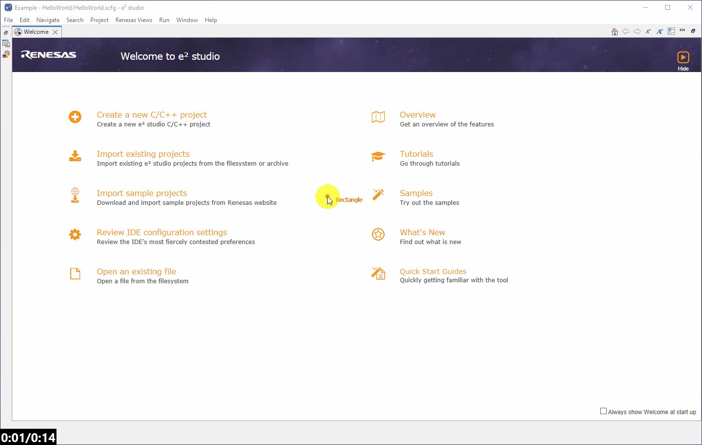

Here we will guide you through creating the RL78/G23 128p FPB (R7F100GSN) low power capacitive touch project.
To create a project we can do this in one of two ways - either using the Welcome Page shortcut - or the conventional method through the File dropdown.
Here we will use the conventional method as this will most commonly be used during development, where the welcome page will not always be present.
[File] → [New] → [Renesas C/C++ Project] → [Renesas RL78]

The toolchain is another term for the group of tools used in the compilation and debug/binary manipulation of a program.
The differences in toolchains will not be covered here but typically a review of the available toolchains should be done in order to select
the toolchain that best fits your development reqiurements.
An observant reader will notice that each toolchain comes in two forms, these are executable and library.
An executable project will be setup to generate binary/debug images (.elf/.mot/.bin etc.) which can be flashed to a device and executed (typical).
A library project will be setup to generate a static library (.lib/.a etc.) file which can be used/linked in other projects, no executable binary
will be generated in a libray project and therefore a library project can not be debugged directly.
Here we will select a Renesas CC-RL C/C++ Executable project.
IMPORTANT:
Do NOT try to use GCC as the RL78/G23 will not be available to select in the subsequent project setup.
&
Do NOT try to use LLVM as the capactive touch driver/middleware has not been tested for use with this lab.
Then click Next >.

The project should be given a sensible name.
Then click Next >.

The project now needs some fine tuning. We will perform the following in the setup dialog:
Enable the use of the smart configurator. This tool allows us to configure the device and generate both peripheral drivers and middleware for inclusion in our poject.
Click Next >.
Then click Finish.

During project creation the following dialogs may appear.
The security warning can be ignored and the user should select [Install anyway].

And for the "open the Smart Confgurator perspective" dialog the user should click [Open Perspective].
Opening this perspecitve just means e2studio will initially present the user with the smart configurator tool for
the project and in the format most suited to using this tool.
Initially you may be presented with the welcome screen, you can select Hide in the top right corner and the projects smart configurator perspective should appear.
